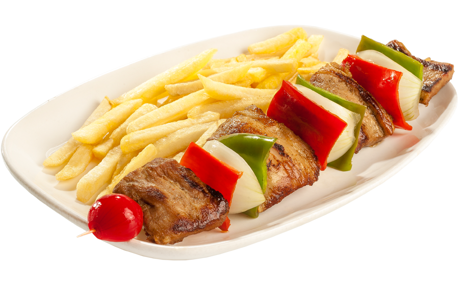

The pork is cut into two-centimeter dice. And inserted into the spikes.
Put four tablespoons of soy sauce in a fountain, add the same amount of water and garlic cloves peeled and chopped. Set the meat skewers and leave for two hours, turning them once in a while.
After that time, grease the plate lightly, heat it over a hot fire and cook the skewers for about 15 minutes, turning them and watering them from time to time with the liquid of the marinade. They are passed to a fountain and are brought to the table fast.
$1.50